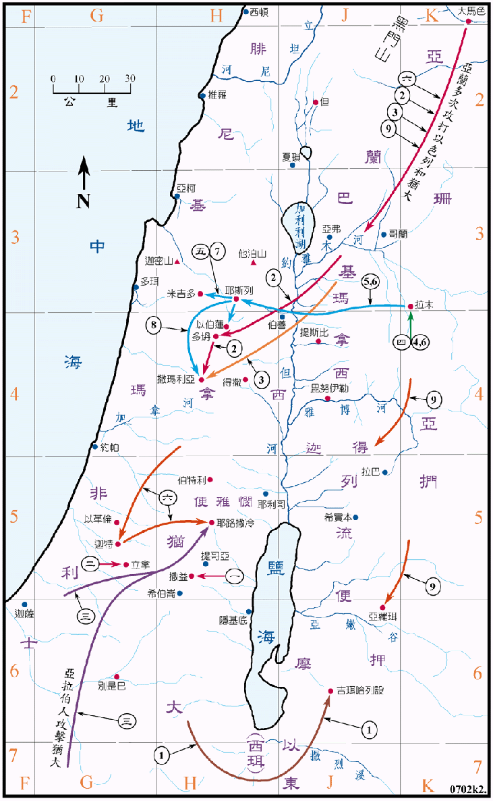

850～800BC

| 国 | 王 |
|---|---|
| 犹大国 | 约兰 (犹大王五 850～843BC) |
| 亚哈谢 (犹大王六 843～842BC) | |
| 亚他利雅 (犹大王七 842～837BC) | |
| 约阿施 (犹大王八 836～797BC) | |
| 先知 | 约珥 |
| 以色列国 | 约兰 (以色列王九 853～842BC) |
| 耶户 (以色列王十 841～815BC) | |
| 约哈斯 (以色列王十一815～799BC) | |
| 先知 | 以利沙 (850～800BC) |
行动线说明
犹大王约兰
| 序号 | 圣经 | 说明 |
|---|---|---|
| 王下8:16-19，代下21:1-7 | 约沙法还在位的时候，他的儿子约兰登基，作王八年，他不行神的道，他娶了以色列王亚哈的女儿亚他利雅为妻，又杀了他的众兄弟和几个首领。他在犹大诸山建 邱坛，诱惑犹大人行邪淫。 | |
| 一、 | 王下8:20-22，代下21:8-10 | 以东人背叛，约兰领兵到撒益去，但战败而返，以东就脱离犹大。 |
| 二、 | 王下8:22，代下21:10 | 立拿人也背叛犹大。 |
| 三、 | 代下21:16-20 | 非利士人和亚拉伯人来攻击犹大，掳掠了王宫中的财物，杀了他的妻儿，只留下小儿子约哈斯 (又名亚哈谢)，不久约兰就病重而死。亚哈谢接续他作王。 |
犹大王亚哈谢
| 序号 | 圣经 | 说明 |
|---|---|---|
| 四、 | 王下8:25-28，9:27-29，代下22:1-5 | 亚哈谢作犹大王一年，他行恶，他与以色列王约兰一同去攻打拉末。 |
| 五、 | 王下8:29，9:27-29，代下22:6-9 | 约兰受伤后回耶斯列，亚哈谢去探望他，但被耶户所杀伤，死在米吉多。 |
犹大王亚他利雅
| 序号 | 圣经 | 说明 |
|---|---|---|
| 王下11:1-20，代下22:10-23:15 | 王后亚他利雅 (犹大王约兰之妻、以色列王亚哈的女儿) 见他儿子死了，就剿灭王室，篡了国位，自立为王。第七年，众人拥立亚哈谢的儿子约阿施为犹大王，就杀了亚他利雅。 |
犹大王约阿施
| 序号 | 圣经 | 说明 |
|---|---|---|
| 王下12:1-16，代下24:1-22 | 约阿施作犹大王四十年，当祭司耶何耶大在世时，他行神看为正的事，重修圣殿。但耶何耶大去世后，就偏离了神的道，并杀了耶何耶大的儿子撒迦利亚。 | |
| 六、 | 王下12:17-18，代下24:23-24 | 亚兰王哈薛攻取了迦特、再攻打耶路撒冷，约阿施就把宫中的宝物给了哈薛，亚兰人才离去，未攻打耶路撒冷。 |
| 王下12:19-21，代下24:25-27 | 约阿施患重病，被臣仆所杀，他的儿子亚玛谢接续他作王。 |
以色列王约兰
| 序号 | 圣经 | 说明 |
|---|---|---|
| 王下1:17，3:1-3 | 亚哈谢去世，他的兄弟约兰 (亚哈的儿子) 接续他作以色列王十二年。他行耶和华眼中看为恶的事。 | |
| 1 | 王下3:4-27 | 摩押背叛，约兰请犹大王约沙法及以东王一同攻打摩押，在旷野缺水，先知以利沙令他们挖沟，就得了水，又打败了摩押。 |
| 2 | 王下6:8-23 | 亚兰王攻打以色列的计划常被以利沙破坏，就派大军到多坍去捉拿以利沙。以利沙使亚兰王的军兵眼目昏迷，竟跟随以利沙走到了撒玛利亚，亚兰人因此惊恐惧怕，就撤兵回去，不敢再犯以色列了。 |
| 3 | 王下6:24-7:20 | 亚兰王便哈达上来围困撒玛利亚，城内在已绝粮之时，以利沙预言亚兰人次日必溃退。结果果然神使亚兰人逃跑，解了撒玛利亚的围。 |
| 4 | 王下8:28-29 | 约兰邀犹大王亚哈谢一同去攻打拉末。 |
| 5 | 王下9:14-26，9:30-37 | 约兰受伤回耶斯列后被耶户所杀，耶户篡了他的位。又在耶斯列杀了他的母亲太后耶洗别。 |
以色列王耶户
| 序号 | 圣经 | 说明 |
|---|---|---|
| 6 | 王下9:1-37 | 先知以利沙令一个门徒到拉末去，膏耶户作以色列的王，耶户就反了，他立刻到耶斯列去，杀了约兰和他的母亲耶洗别。 |
| 7 | 王下9:27 | 耶户在米吉多杀了犹大王亚哈谢。 |
| 8 | 王下10:1-17 | 耶户令人在撒玛利亚杀了以色列王亚哈的七十个儿子，又在撒玛利亚的路上，杀了犹大王亚哈谢的四十二个兄弟，到了撒玛利亚，就把亚哈家剩下人都杀尽了。 |
| 王下10:18-31 | 耶户又设计杀了拜巴力的众人，拆毁巴力庙，这样耶户就在以色列中灭了巴力。但他仍拜金牛犊，也未尽心遵守耶和华的道。 | |
| 9 | 王下10:32-36 | 在那些日子，耶和华才割裂以色列国，使亚兰王哈薛攻击河东之诸地。他作王二十八年，他的儿子约哈斯接续他作王。 |
以色列王约哈斯
| 序号 | 圣经 | 说明 |
|---|---|---|
| 王下13:1-9 | 约哈斯作以色列王十七年，他行神眼中看为恶的事，耶和华屡次将他交在亚兰王哈薛和便哈达的手中，灭绝他的人民，践踏他们如禾场上的沙尘，只给留五十马兵、十辆战车、一万步兵。他死后他的儿子约阿施接续他作王。 |
这前十五年是一段很悲惨的日子，犹大的诸王都背弃神。在约兰年间，以东和立拿都背叛了，又被亚拉伯人和非利士人攻打，亚哈谢和他的四十二个兄弟都被耶户所杀，馀下的王室又被亚他利雅女王所剿灭，杀了馀下的亲属，王室几乎被灭绝，只留下约阿斯一人。约阿斯的早年尚能奋发向上、行神所看为正的事，但到祭司耶何耶大去世后，就偏离了神的道。当他受到亚兰人的攻击，约阿斯将宫里的宝物给了亚兰王，耶路撒冷方才免了一劫。
至於在以色列方面，当约兰王年间，受到亚兰多次的攻打，所幸有先知以利沙的保护，都能化险为夷。不久耶户篡位，开始了九十年的耶户王朝，耶户王杀尽了南北两国的王室，也除灭了拜巴力的众人，但他仍拜金牛犊。在耶户晚年时，亚兰夺去了河东之地，到他儿子约哈斯的手上，以色列几被亚兰所灭，只留下小量的兵力，实际上已成为亚兰的傀儡。南北两国从耶户王朝开始，又形成敌对的局势。